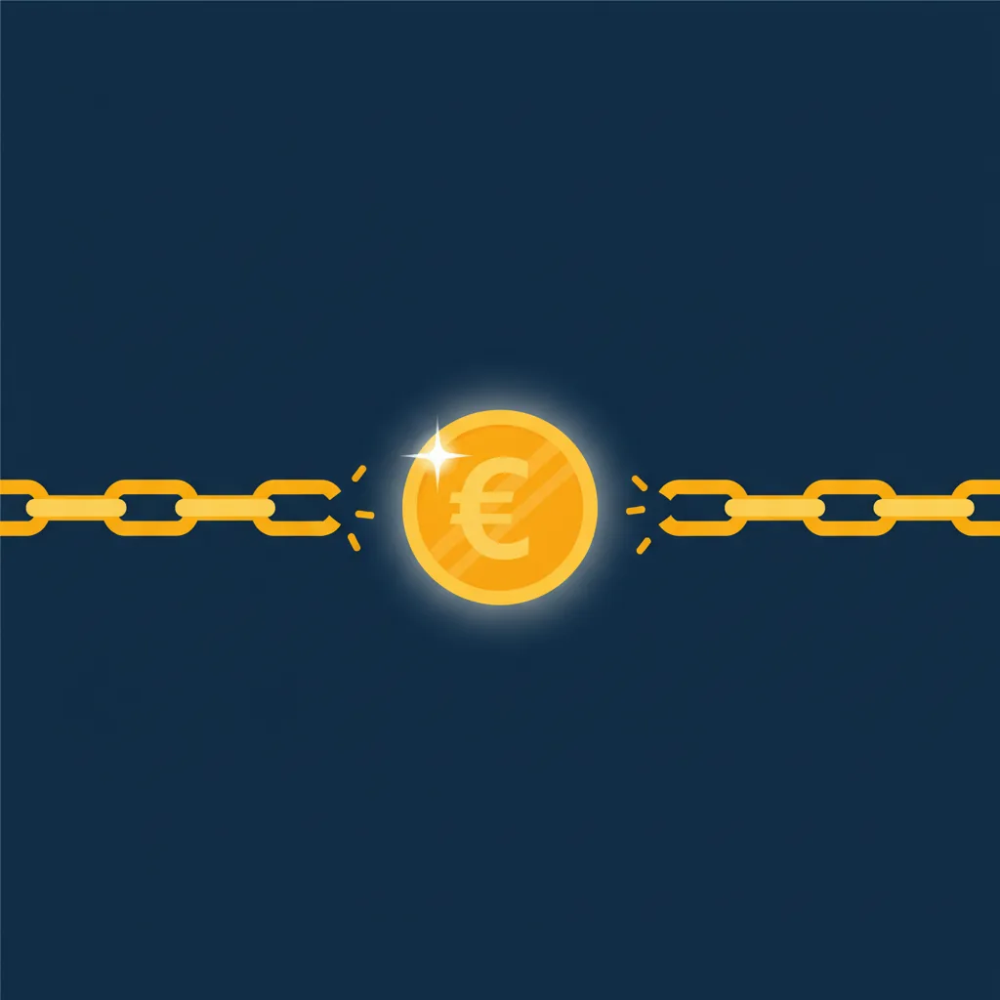

Pubblicato il 17 settembre 2026 · lettura 7 minuti

Uscire dal debito non è questione di forza di volontà: è questione di ordine. Chi paga un po' su tutto, ogni mese, resta fermo per anni. Chi mette i debiti in fila e attacca il primo della lista esce prima, pur pagando le stesse rate. Questo è il metodo in 5 step, spiegato con la logica dell'officina: prima si diagnostica, poi si smonta, poi si evita il prossimo guasto.
Prima di toccare qualsiasi bullone, devi vedere tutta la situazione in un unico foglio:
Non fidarti della memoria: i debiti che "non contano" sono sempre quelli che pesano di più. Se preferisci un foglio già pronto, usa il nostro debt tracker: inserisci importo, tasso e rata e vedi in quale mese sei libero.
Non tutti i debiti sono uguali: quello che ti costa di più è il debito con il tasso più alto, non quello con l'importo più alto. Una carta di credito revolving al 18% annuo ti mangia più soldi di un mutuo al 3% con la stessa cifra residua. Il primo passaggio è quindi mettere in ordine i debiti per tasso decrescente: in cima finiscono carte, scoperti e finanziamenti al consumo; in fondo mutui e prestiti agevolati. Questa è la lista di priorità che userai nello Step 2.
Questa è la strategia che funziona meglio dal punto di vista psicologico:
Perché funziona? Perché vedi risultati velocemente. Ogni debito estinto è un ingranaggio rimesso a posto. E la motivazione è il carburante dell'officina. Se invece vuoi pagare il meno possibile in assoluto, l'ordine è per tasso decrescente (metodo "valanga"): conviene matematicamente, ma richiede più costanza, perché il primo debito estinto può arrivare dopo mesi.
Qui non serve un budget perfetto: serve capire quali spese non ti danno nulla. Il problema non è il caffè al bar, sono gli abbonamenti che non usi, le rate di cose che non ricordi di aver comprato e gli acquisti d'impulso da 30-50 € che sembrano piccoli ma ogni mese spostano la data in cui sarai libero. L'esercizio qui sotto serve esattamente a distinguere le spese che valgono da quelle che paghi per abitudine.
📋 L'esercizio dei 30 giorni:
Facile a dirsi, meno a farsi. Ma non devi reinventarti. Pensa in modo meccanico:
Regola pratica: ogni entrata extra va al 100% sul debito in cima alla lista, mai sul budget quotidiano. Se finisce nel conto di tutti i giorni, sparisce nel giro di tre settimane.
Una volta fuori dal debito, il lavoro non è finito. Devi installare un sistema di allarme:
3-6 mesi di spese in un conto separato. È il tuo "sensore di fumo" — come calcolarlo
Per ogni spesa sopra 50 €: aspetta 48 ore prima di comprare. Spesso passa la voglia
Ogni mese, controlla i tuoi conti. 15 minuti bastano per evitare sorprese
Racconta il tuo percorso a qualcuno. La responsabilità verso gli altri è il miglior incentivo
La valanga (tasso più alto prima) costa meno interessi; la palla di neve (importo più piccolo prima) dà risultati visibili prima e si porta a termine più spesso. Se hai bisogno di vedere progressi per non mollare, parti dalla palla di neve.
Ha senso quando il tasso del nuovo prestito è più basso di quelli che sostituisce e la durata non si allunga troppo. Va invece evitato quando trasforma un debito a breve in un debito a 8 anni: la rata scende, gli interessi totali spesso salgono.
Parlane con il creditore prima della scadenza: una rateizzazione concordata costa molto meno di una segnalazione in centrale rischi. Rivolgiti anche a un'associazione di consumatori o a un consulente, che possono valutare le procedure previste dalla legge per le situazioni di sovraindebitamento.
Scopri in quale mese sarai libero dai debiti
Apri il debt tracker →